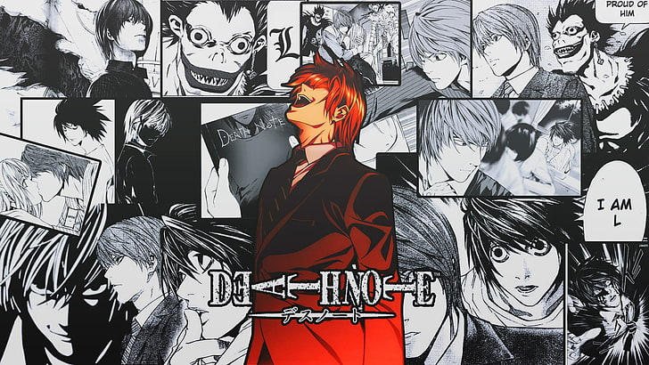
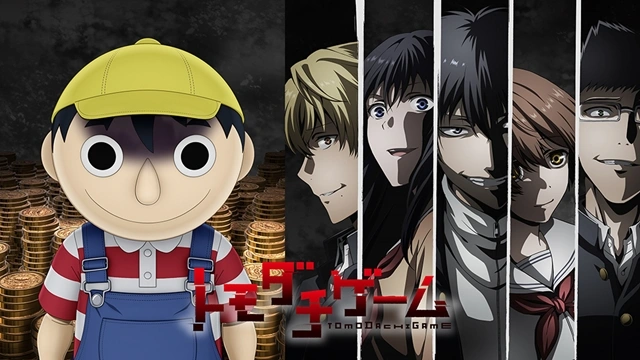
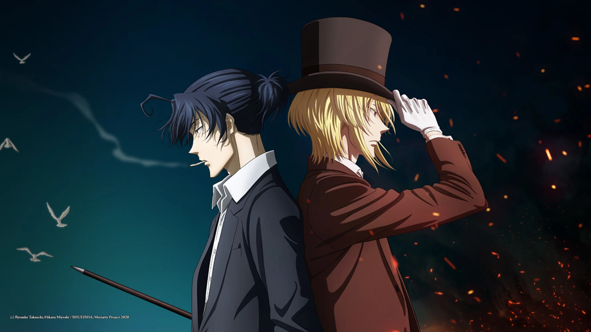

Anime
Anime is a unique and vibrant style of animation originating
from Japan. It's known for its stunning artwork, complex characters, and incredibly diverse storytelling
that spans every genre imaginable.
1.Death Note

A brilliant high school student discovers a mysterious notebook that allows him to
kill anyone whose name he writes inside. He begins a secret crusade to rid the world of criminals.
Genre: Psychological, Thriller, Supernatural, Mystery
Studio: Madhouse
My Rating: 10/10
"A legendary cat-and-mouse game that will keep you on the edge of your seat."
2.Classroom of the Elite

At a prestigious high school where students are ranked by merit, a quiet and unassuming student finds himself
in the lowest-ranked class, where he secretly manipulates events from the shadows.
Genre: Psychological, Drama, School
Studio: Lerche
My Rating: 8/10
"Features one of the most cunning and manipulative protagonists in anime."
3.Tomodachi Game

A group of high school friends are forced into a series of psychological games that test the limits of their
friendship after one of them saddles the group with a massive debt.
Genre: Psychological, Thriller, Game
Studio: Okuruto Noboru
My Rating: 8/10
"An intense series of mind games that explores the darker side of trust and friendship."
4.Case Closed

A brilliant teenage detective is trapped in a child's body by a mysterious organization and must solve crimes
while searching for a cure, all while keeping his true identity a secret.
Genre: Mystery, Detective, Shonen
Studio: TMS Entertainment
My Rating: 9/10
"The ultimate detective anime with hundreds of clever cases to solve."
5.Moriarty the Patriot

In the late 19th century, William James Moriarty acts as a "crime consultant" for the common people, seeking
to destroy the corrupt class system of Britain through a series of elaborate and perfect crimes.
Genre: Mystery, Psychological, Historical
Studio: Production I.G
My Rating: 9/10
"A brilliant retelling of the Sherlock Holmes story from the villain's perspective."
6.Code Geass: Lelouch of the Rebellion

An exiled prince gains a powerful supernatural ability called Geass and leads a rebellion against a tyrannical empire, using grand-scale strategy and psychological warfare.
Genre: Mecha, Military, Super Power, Psychological
Studio: Sunrise
My Rating: 10/10
"A masterpiece of strategy, moral ambiguity, and features one of the greatest endings in anime history."